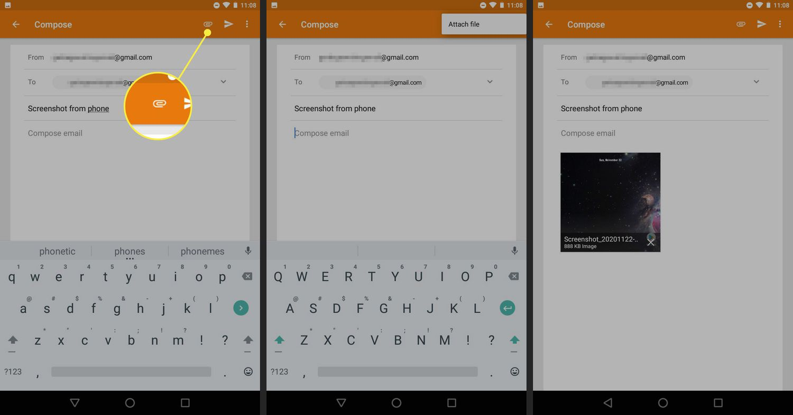

What is FTP?
File Transfer Protocol (FTP) is one of the oldest Internet protocols, developed in the early 1970s. It provides a standard way to upload and download files between computers over a network. FTP uses a client-server model where the FTP client initiates a connection to the FTP server to transfer files.
It is commonly used by web developers to upload website files to a hosting server.
How FTP Works
- The FTP client connects to the FTP server using port 21
- The user authenticates with a username and password
- A separate data connection is established for file transfers
- Files can be uploaded to or downloaded from the server
- The connection is closed when the transfer is complete
FTP Modes
- Active Mode — the server initiates the data connection back to the client
- Passive Mode — the client initiates both connections, useful when behind a firewall
FTP vs SFTP vs FTPS
- FTP — basic file transfer, no encryption, data sent in plain text
- SFTP — Secure FTP, uses SSH encryption to protect data in transit
- FTPS — FTP Secure, adds SSL/TLS encryption to standard FTP
💡 Plain FTP is considered insecure for sensitive data because usernames, passwords, and file contents are transmitted unencrypted. SFTP or FTPS should always be used for secure transfers.
Common FTP Client Software
- FileZilla — the most popular free FTP client
- WinSCP — widely used for secure file transfers on Windows
- Cyberduck — popular FTP client for Mac users